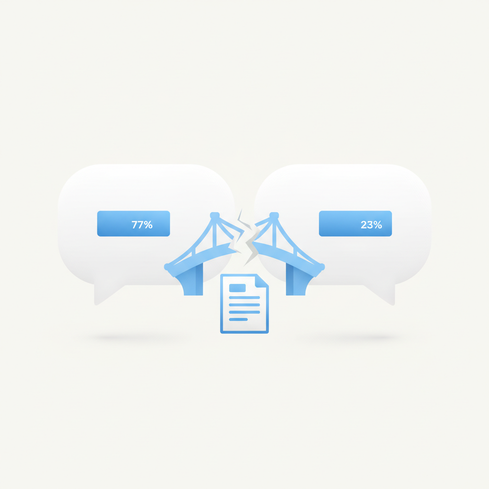
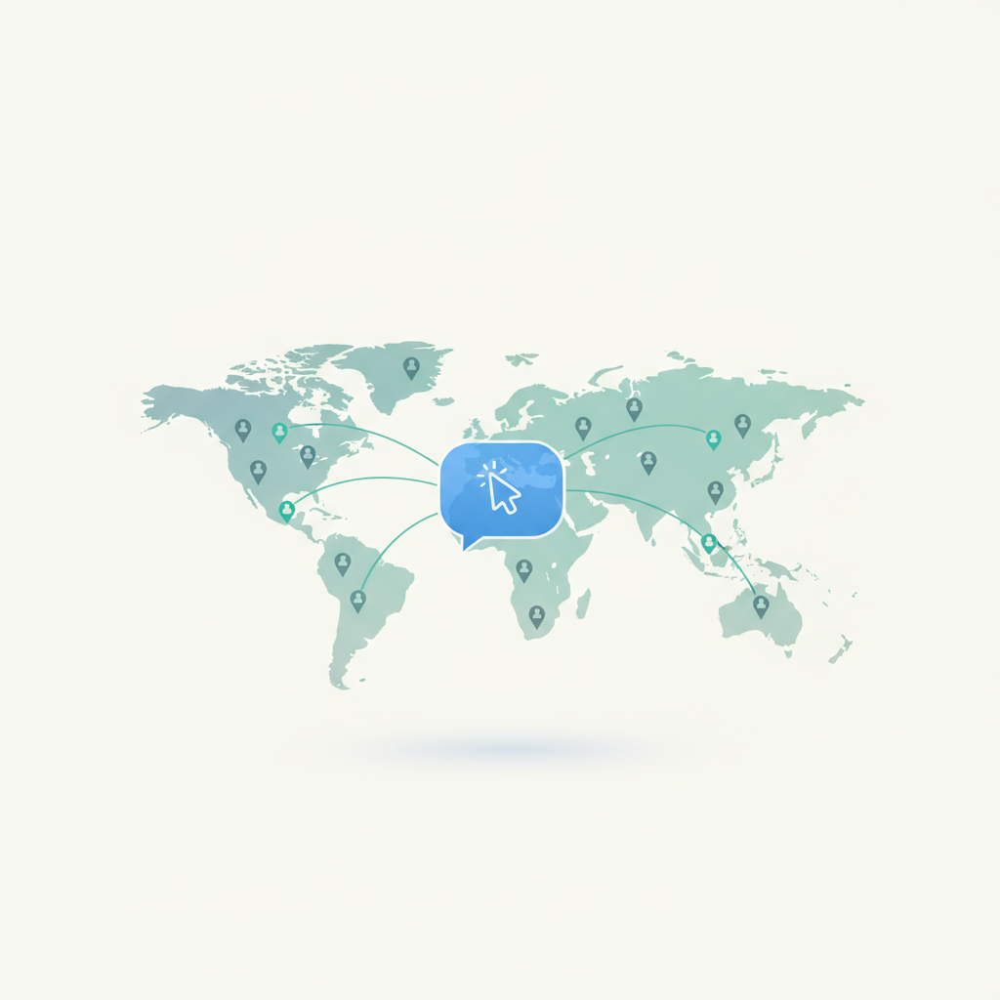
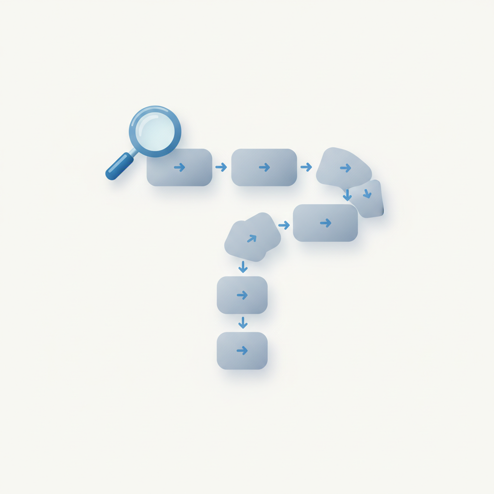
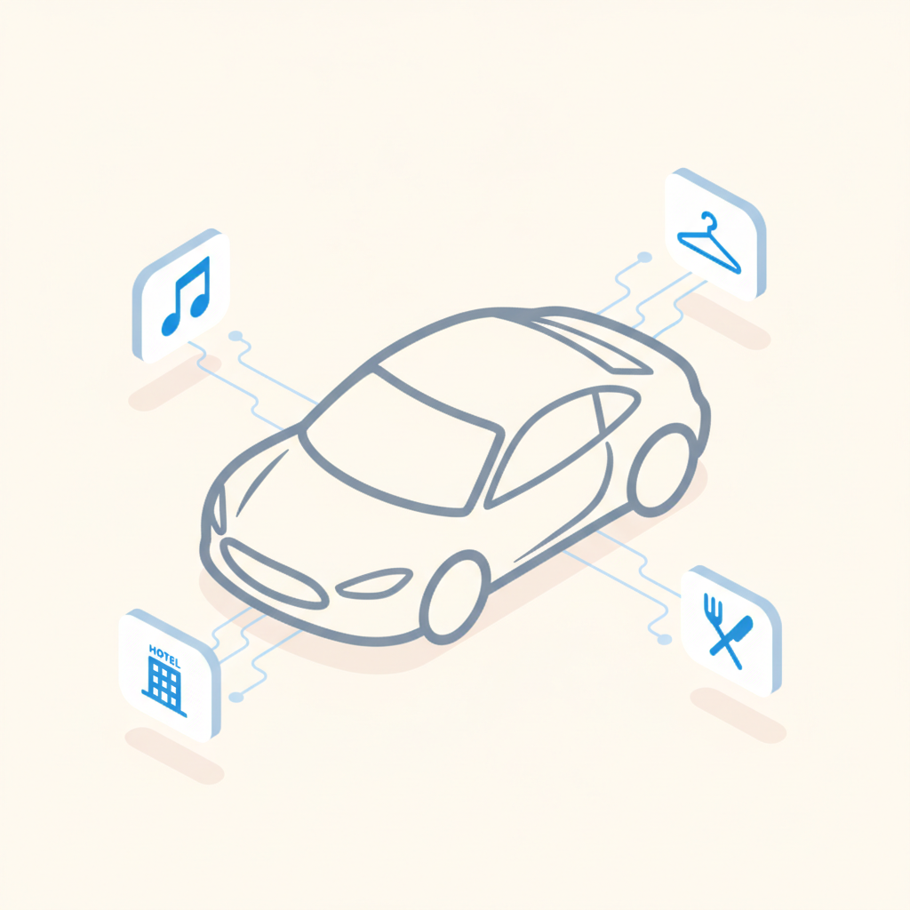
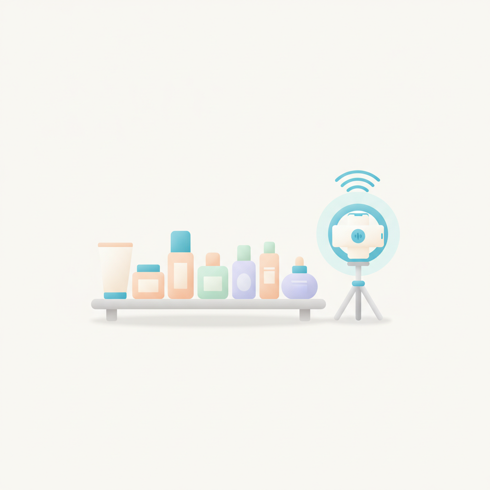
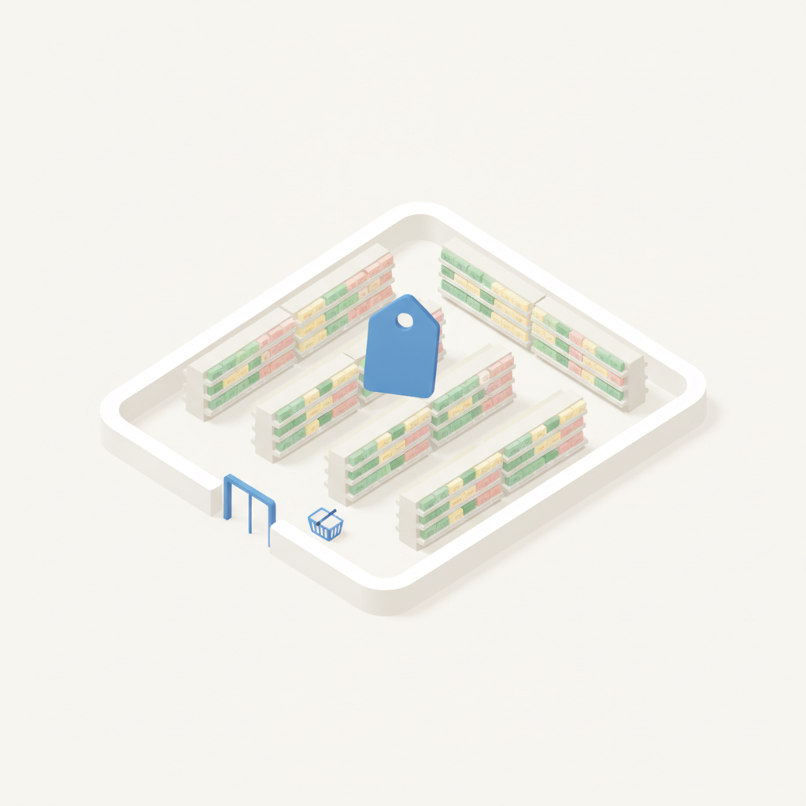
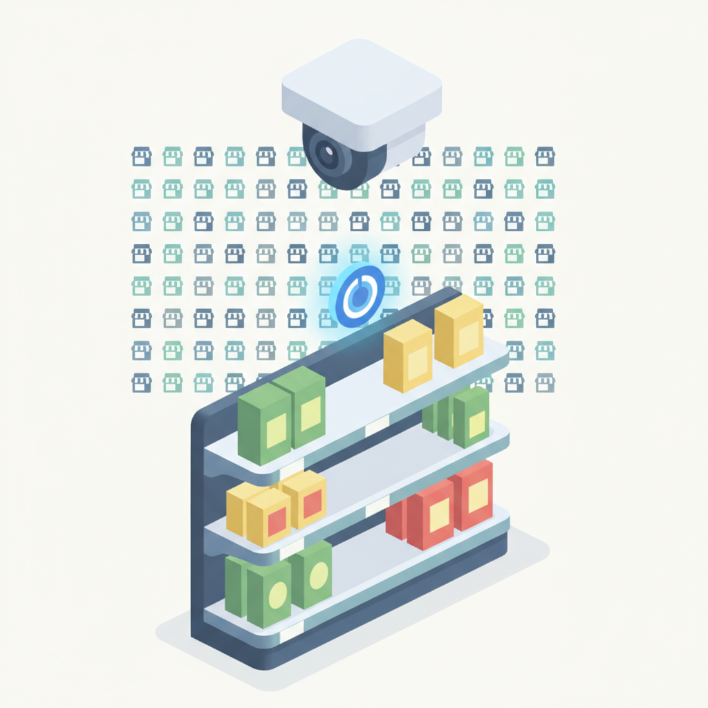
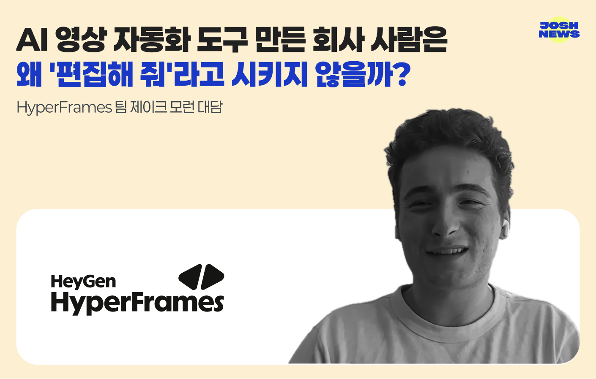

안녕하세요! 수요일 마케팅 소식 전해드립니다 😊 오늘은 광고주와 대행사 사이의 인식 격차가 두드러집니다. "우리는 필요한 역량을 제공하고 있다"는 대행사 측 응답이 77%인 반면, 같은 질문에 동의한 광고주는 23%에 그쳤습니다. 54%포인트라는 간극은 단순한 소통 문제를 넘어, 양측이 '역량'이라는 단어 자체를 다른 기준으로 정의하고 있다는 신호일 수 있습니다. 파트너십의 언어를 다시 맞춰야 할 시점이라는 점에서, 대행사와 인하우스 마케터 모두가 한번쯤 짚어볼 지점입니다.
SEO 전략의 무게중심 이동도 함께 살펴볼 만합니다. 특정 키워드 순위를 올리는 방식에서, 사용자가 질문을 던지고 조건을 붙이며 비교·확인하는 '질문의 흐름' 전체를 설계하는 방향으로 전환이 이뤄지고 있습니다. 대화형 검색이 일상화될수록 콘텐츠는 단답형 답변이 아니라 이어지는 맥락을 함께 담아야 하는데, 이 변화는 콘텐츠 기획과 SEO 전략을 함께 다루는 팀이라면 지금 바로 구조를 점검해볼 이유가 됩니다.
한 주의 중반, 오늘도 좋은 인사이트로 힘차게 채우시길 바랍니다! 💡

1광고회사 소속 응답자의 77%는 자사가 광고주에게 필요한 역량을 제공하고 있다고 답했지만, 같은 질문에 동의한 광고주는 23%에 그쳐 54%포인트 차이가 발생했다. 영국 더드럼과 아이리서치 서비스가 발표한 보고서 '마인드 더 갭'에서 나온 결과다. 대행사와 광고주 간 기대 불일치가 얼마나 큰지 보여주는 수치로, 마케터들은 클라이언트가 실제로 원하는 것이 무엇인지 재점검할 필요가 있다.
›
2인덴트코퍼레이션이 커머스 AI 에이전트 '인덴트M'을 공개했다. 72개국 현지 크리에이터를 활용한 마케팅을 지원하며, 이용자가 AI와 대화하는 방식으로 목표 국가·크리에이터 유형 등을 설정하면 기획부터 섭외, 캠페인 집행까지 자동 처리된다. K브랜드의 글로벌 인플루언서 마케팅 진입 장벽을 낮출 수 있어 해외 진출을 검토하는 마케터에게 주목할 만한 서비스다.
›
32026년 SEO 환경에서는 단일 키워드 순위 최적화보다 사용자가 질문을 던지고 조건을 붙이며 비교·확인하는 '질문의 흐름' 전체를 커버하는 콘텐츠 전략이 요구된다. 검색이 대화형으로 진화하면서 사용자의 다음 질문에도 우리 콘텐츠가 연속적으로 답할 수 있는지가 핵심 지표가 된다. 검색 광고 및 콘텐츠 마케팅 담당자는 키워드 단위 접근을 넘어 사용자 여정 전반을 설계하는 방식으로 전략을 전환해야 한다.
›
4럭셔리 자동차 브랜드 벤틀리 모터스가 소비자 분석 기업 피프티와 12개월 플랫폼 이용 계약을 체결하고, AI 도구 '오디언스AI 어시스턴트'로 자동차 애호가 외 패션·음악·호텔·외식 관심층까지 분석해 새로운 고객층을 발굴한다. 자동차 카테고리에 한정하지 않고 라이프스타일 전반의 관심사 데이터를 마케팅에 활용하는 접근법이다. 럭셔리 브랜드의 AI 기반 오디언스 확장 전략은 타 업종 마케터에게도 타깃 재정의의 실마리를 제공한다.
›
5영국 뷰티 유통 브랜드 바디케어가 브랜드 디자인사 폴드7디자인과 함께 매장 내 틱톡 라이브 방송 및 영상 제작이 가능한 스튜디오 공간을 도입하는 리뉴얼을 단행했다. SNS에서 제품을 발견하고 공유하는 경험을 오프라인 매장에서도 구현하는 데 초점을 맞췄다. 소셜커머스와 오프라인 리테일의 경계를 허무는 이 사례는 틱톡 마케팅과 매장 경험을 통합하려는 리테일 마케터에게 참고할 만한 전략이다.
›
6이마트가 10월 22일 스타필드 마켓 월계점·은평점에 100평 규모의 초저가 균일가 매장 '와우샵'을 열고 연내 5곳까지 확장할 계획이다. 1천~1만 원 균일가로 전체 상품의 60%를 구성하며, 다이소를 직접 겨냥하기보다 '이마트 방문 이유'를 만드는 집객 전략으로 분석된다. 저가 라인 확장이 브랜드 포지셔닝과 어떻게 공존할 수 있는지, 리테일 마케터가 주목해야 할 사례다.
›
7피치에이아이가 일본 패밀리마트와 진행한 매장 카메라 기반 진열·결품 관리 AI 솔루션 'RAX'의 현장 실증이 마무리 단계에 접어들었다. 두 회사는 실증 결과를 바탕으로 도입 점포를 최대 500곳까지 늘리는 방안을 협의 중이며, 2027년 1분기 본격 구축을 목표로 한다. AI 기반 재고·진열 관리가 편의점 현장에 본격 확산될 경우 리테일 마케터의 매장 운영 전략에도 직접적인 영향을 미칠 전망이다.
›
HyperFrames 팀 제이크 모런 대담, 찍은 영상은 편집 용어로 새 영상은 스토리보드부터
브랜드 진단부터 지금 당장 해야 할 우선순위까지,
30분 무료 상담에서 함께 정리해드려요.
이미 수십 개 브랜드가 상담받았습니다.
내 브랜드처럼, 함께 고민하는 팀원의 마음으로 봅니다.
스타트업 대표·마케팅 담당자를 위한 30분